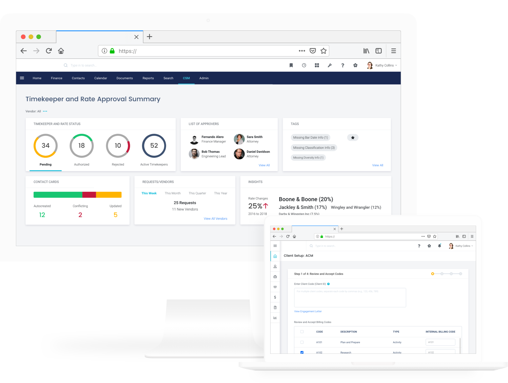

Design Sprints
Enterprise Software
User Experience, Visual Design
8 months // 2019
Over an 8-month period, my manager, Aksa Alex, and I facilitated 5 design sprints to streamline a certain workflow that caused the customers a lot of pain.
For this discovery work, we were given the freedom to think outside the box and not be bound by current framework restrictions.
Credits
UX, research, wireframing, prototyping, user testing, visual design - Kailyn Lim
UX, research, wireframing, prototyping, user testing - Aksa Alex
Design system - Bryan Walker
Product - Kim Howard, Kim Felice, Dan Braun
Engineering - Reda Colli, Amandelyn Wilson
Services - Isabel Keogh, Blair Bonnema
Support - Tracy Urban

Discovery Process and Phases
Below is a discovery process Mitratech employs. It’s a highly collaborative process, not only internally, but with our customers as well. Through client calls and onsite visits, we discover the customers’ workflows, pain points, and wishlists. From there, we create a value map with ideas and concepts that would relieve pains and create confidence in our users. After validating the ideas with our users, we go into a design sprint to further flesh out the high-level concepts. We share the outputs from the design sprint with our internal stakeholders, as well as our clients, to ensure that we have successfully created meaningful solutions.

Research
Prior to kicking off the design sprint, the product team, including the designers, conducted research in order to gain a thorough understanding of the customers and their use cases.
In total, we had 13 one-on-one interviews with customers (one was on-site in Houston, TX), 5 stakeholder conversations, and 2 internal and external surveys.
Design Sprint
A design sprint is a five-day process for answering critical business questions through design, prototyping, and gathering feedback from customers.
We actually experimented with our design sprints and have tried various lengths: one week, a week and a half, and two weeks.
In the end, we decided that one-week sprints worked best for us. During the design sprints, we got together and collaborated on how to solve a specific problem from many different angles.
We have had a total of 5 design sprints so far.
Design Sprint Outputs
Due to confidentiality, I have removed the product logos. All of the data in the mockups is made up. After creating wireframes and validating them with customers and internal stakeholders, I worked on visual design and implemented colors, fonts, and other elements by referencing the design system. This is one of my favorite stages of the entire design process because it feels as if the solutions we produced get one step closer to becoming a reality. Some (not all) of the outputs from the sprints are shared below.

Takeaways
NO RESTRICTIONS
Design sprint was a lot different than PI (program increment) sprint in that I had the creative freedom to come up with as many ideas as I could without a lot of restrictions.
Of course, the solutions had to be technically feasible, and that is why we had two engineers on the design sprint team.
Although these sprint weeks were jam-packed with deliverables and meetings, those were also the most exciting, inspiring, and productive weeks.
USER TESTING
Initially, we had trouble getting feedback from customers. We would share our forward-thinking designs in the one-hour working groups following each design sprint, but due to the amount of work we had to share, we would often run out of time for feedback. After two lackluster working groups, I made a suggestion that we utilize the client working groups to do user testing. Rather than just going through our interactive prototypes and explaining our rationale, we would ask the participants to perform specific tasks using the prototypes. The groups were relatively small - consisting of 2-3 people - so this method was effective. It also sprouted engagement from everyone on the call.
USER TESTING
The other challenge we initially ran into was collaboration. This stemmed from my manager working remotely in Houston, TX, while everyone else on the team worked out of the Austin office.
Communicating and brainstorming ideas together became difficult at times due to distance. Therefore, we used a tool called Miro to combat this. This platform allowed us to build user flows together and share comments in real-time.
In addition to that, my manager drove to Austin for the last two design sprints and spent the first two days of the sprints, so that we could brainstorm and do sketches together in person.